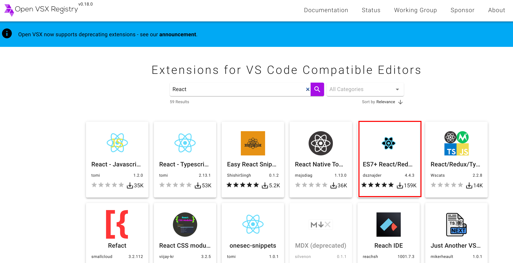
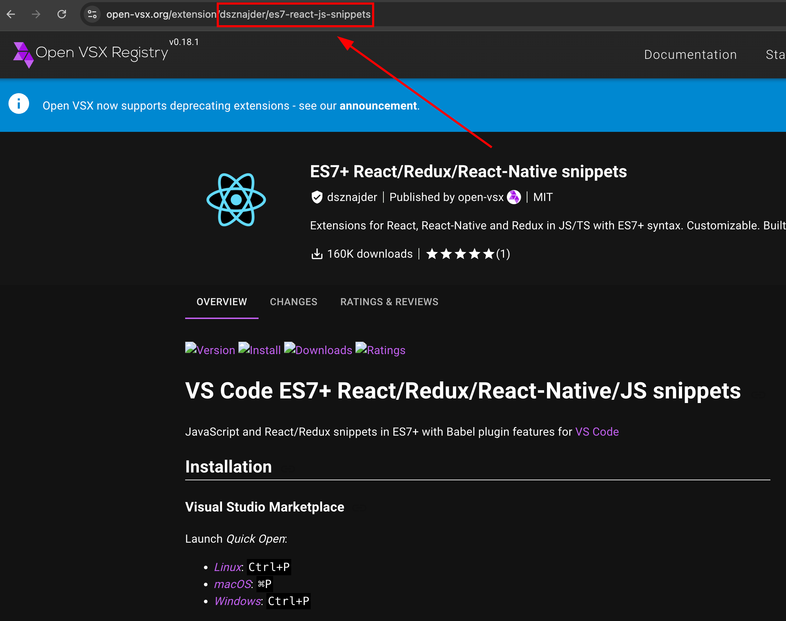
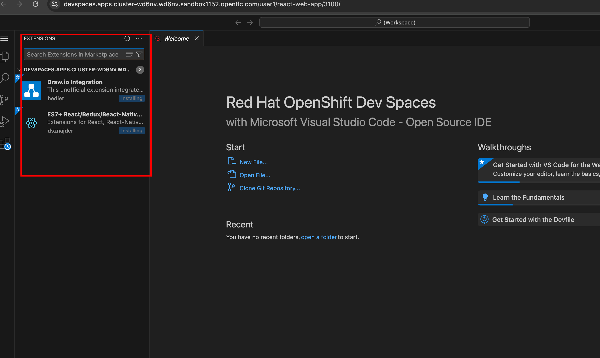

Automatic Enablement of IDE Plugins
In the previous section, you learned how to enable the public Open VSX registry to get access to an extended set of plugins, that are not available by default in the embedded instance of the plugin registry. To avoid manually installing plugins inside workspaces, there is a simple way to auto-install plugins on workspace start up by adding a JSON file inside a .vscode folder in the Git repository of the application source code.
Dev Spaces detects files inside the .vscode folder, parses the JSON file for plugins (extensions.json), and then automatically installs them in the workspace.
Lab: Enable Automatic Installation of IDE Plugins
-
Ensure that you have configured Dev Spaces to fetch plugins from the public Open VSX plugin registry (https://open-vsx.org). Complete the hands-on lab in the previous section.
-
Inspect the Git repository for a sample React front-end web application at https://github.com/rsriniva/devspaces-plugins-demo. Briefly review the devfile in the repository.
-
Let’s assume you want to automatically install the
draw.ioandES7 React/Redux Snippetsplugins for your project. Search the Open VSX website for the React snippets and draw.io plugins.Figure 1. React Snippets Plugin -
Click on the
ES7+ React/Redux/React-Native snippetsoption and view the details of the plugin. This plugin enables developers to auto-generate React code snippets by typing a few letters as a shortcut. You can see the shortcuts and the code the plugin generates at https://github.com/r5n-labs/vscode-react-javascript-snippets/blob/HEAD/docs/Snippets.md. -
To identify a plugin from the registry, VS Code uses the namespace.extension-name format. For example, the React snippets plugin is uniquely identified by
dsznajder.es7-react-js-snippets, and the draw.io plugin ishediet.vscode-drawio. Look at the URL on the plugin details page. Copy the text afterextensions, and replace/by a dot (.)Figure 2. Get the extension ID -
Inspect the
.vscode/extensions.jsonfile in the Git repository. Add the IDs of the plugins you want to enable in your workspace to therecommendationslist.{ "recommendations": [ "dsznajder.es7-react-js-snippets", "hediet.vscode-drawio" ] } -
Create a new workspace in the Dev Spaces dashboard using the Git repository URL of the React application.
-
After the workspace is loaded, switch to the
extensionstab in the left sidebar. Notice that the two plugins from yourextensions.jsonfile are automatically installed.Figure 3. React and Draw.io plugins -
In the IDE, open a Javascript, JSX, or TSX file and type
rafce. The plugin expands the snippet abbreviation to the code for a functional React component in the editor.